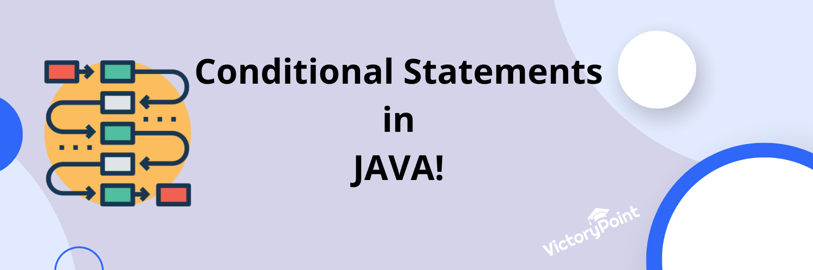

Conditional Statements
Imagine you're a programmer facing a series of choices while writing code. How do you make your program respond dynamically based on different conditions? Enter conditional statements in Java! These powerful tools allow you to control the flow of your program, making it behave differently depending on specific situations. In this blog, we'll unravel the mysteries of if, else, else if, if-else-if ladder, and switch case statements in Java. So, fasten your seatbelts as we dive into the world of decision-making!
If Statement
The if statement is the foundation of conditional programming. It enables your program to execute a block of code if a certain condition is true.
public class Example {
public static void main(String[] args)
{
int temperature = 40;
if (temperature >= 30) {
System.out.println("It's a hot day!");
}
}
}
Output:
It's a hot day!
Else Statement
Sometimes, you want your program to execute a different block of code when a condition is false. That's where the else statement comes in.
public class Example {
public static void main(String[] args)
{
int temperature = 20;
if (temperature >= 30) {
System.out.println("It's a hot day!");
} else {
System.out.println("It's not that hot today.");
}
}
}
Output:
It's not that hot today.
Else If Statement
The else if statement allows you to test multiple conditions one by one and execute the corresponding block of code when the condition is true. Let's say you want to categorize students based on their test scores.
public class Example {
public static void main(String[] args)
{
int score = 85;
if (score >= 90) {
System.out.println("Excellent!");
} else if (score >= 80) {
System.out.println("Good job!");
} else {
System.out.println("You can do better!");
}
}
}
Output:
Good job!
If-Else-If Ladder
The if-else-if ladder is a sequence of multiple else if statements that allow you to test conditions one by one until a true condition is found. It provides a structured way to handle complex decision-making scenarios.
public class Example {
public static void main(String[] args)
{
int age = 27;
double ticketPrice;
if (age <= 12) {
ticketPrice = 5.0; // Child pricing
} else if (age <= 18) {
ticketPrice = 8.0; // Teen pricing
} else if (age <= 59) {
ticketPrice = 12.0; // Adult pricing
} else {
ticketPrice = 9.0; // Senior pricing
}
System.out.println("The ticket price is: $" + ticketPrice);
}
}
Output:
The ticket price is: $12.0
Here is another example.
public class Example {
public static void main(String[] args)
{
int score = 75;
String grade;
if (score >= 90) {
grade = "A";
} else if (score >= 80) {
grade = "B";
} else if (score >= 70) {
grade = "C";
} else if (score >= 60) {
grade = "D";
} else {
grade = "F";
}
System.out.println("Your grade is: " + grade);
}
Output:
Your grade is: C
Switch Case Statement
The switch case statement provides an alternative way to perform multi-conditional branching. When working with switch case statements, there are two important concepts you must grasp to utilize them effectively. Let's explore these concepts in detail:
- break: After executing a code block corresponding to a case, the break statement is used to exit the switch statement. It prevents the execution of subsequent case blocks. If no break statement is encountered, the control falls through to the next case, and subsequent case blocks are executed until a break statement is encountered or the switch statement ends.
- default: The default case is optional and serves as the default choice when none of the case values match the expression. It is executed when no other cases are a match. The default case is typically used to handle any unexpected or unspecified scenarios.
public class Example {
public static void main(String[] args)
{
int num1 = 10;
int num2 = 5;
char operator = '+';
int result;
switch (operator) {
case '+':
result = num1 + num2;
break;
case '-':
result = num1 - num2;
break;
case '*':
result = num1 * num2;
break;
case '/':
result = num1 / num2;
break;
default:
System.out.println("Invalid operator!");
return;
}
System.out.print("Result: "+result);
}
}
Output:
Result: 15
It is crucial to include break statements in a switch case statement; otherwise, the code may produce unintended and undesired results. By omitting break statements, the program can exhibit fall-through behavior, where the execution continues to subsequent cases, resulting in multiple code blocks being executed.
public class Example {
public static void main(String[] args)
{
char grade = 'B';
switch (grade) {
case 'A':
System.out.println("Excellent grade!");
case 'B':
System.out.println("Good grade!");
case 'C':
System.out.println("Average grade!");
case 'D':
System.out.println("Below average grade!");
case 'F':
System.out.println("Failed grade!");
default:
System.out.println("Invalid grade!");
}
}
}
Output:
Good grade!
Average grade!
Below average grade!
Failed grade!
Invalid grade!
Clubbing Cases in Switch Statements
Multiple cases can be clubbed together to efficiently handle shared behavior and reduce code repetition. By omitting the break statement after each case, the execution falls through from one case to the next until a break statement is encountered.
Clubbing cases together is a useful technique when multiple cases require identical treatment, allowing us to streamline code and enhance efficiency.
public class Example {
public static void main(String[] args)
{
int dayOfWeek = 3;
String dayType;
switch (dayOfWeek) {
case 1:
case 2:
case 3:
case 4:
case 5:
dayType = "Weekday";
break;
case 6:
case 7:
dayType = "Weekend";
break;
default:
dayType = "Invalid day";
break;
}
System.out.println("The day is a " + dayType);
}
}
Output:
The day is a Weekday
In this example, the switch case statement categorizes the day of the week into "Weekday" or "Weekend" based on the value of dayOfWeek. By omitting the break statements after each case, multiple cases are clubbed together. If dayOfWeek is 1, 2, 3, 4, or 5, the expression matches any of those cases, and the corresponding code block is executed. Similarly, if dayOfWeek is 6 or 7, the expression matches either case 6 or case 7.
Nested Conditional Statements
Nested if-else statements allow us to incorporate multiple levels of decision-making within existing conditions, enabling us to create intricate and sophisticated logic. Let's dive into an example that showcases the power of nested if-else statements
public class Example {
public static void main(String[] args)
{
int age = 22;
boolean hasDriverLicense = false;
if (age >= 18) {
if (hasDriverLicense) {
System.out.println("You are eligible to drive.");
} else {
System.out.println("You are eligible to apply for a driver's license.");
}
} else {
System.out.println("You are not eligible to drive or apply for a driver's license.");
}
}
}
Output:
You are eligible to apply for a driver's license.
Nested Switch case statements offer an elegant alternative to nested if-else statements, especially when dealing with discrete choices or enumeration-like values. This construct allows us to compare an expression or variable against multiple values and execute the corresponding code block. Let's delve into an engaging example that highlights the versatility of switch case statements:
public class Example {
public static void main(String[] args)
{
int floor = 2;
int room = 4;
//There are two floors with two rooms on each floor
switch (floor) {
case 1:
switch (room) {
case 1:
System.out.println("You are on the first floor, Room 1.");
break;
case 2:
System.out.println("You are on the first floor, Room 2.");
break;
default:
System.out.println("Invalid room on the first floor.");
break;
}
break;
case 2:
switch (room) {
case 1:
System.out.println("You are on the second floor, Room 1.");
break;
case 2:
System.out.println("You are on the second floor, Room 2.");
break;
default:
System.out.println("Invalid room on the second floor.");
break;
}
break;
default:
System.out.println("Invalid floor.");
break;
}
}
}
Output:
Invalid room on the second floor.
In the world of programming, conditional statements provide the power to make decisions and execute specific code blocks based on varying conditions.